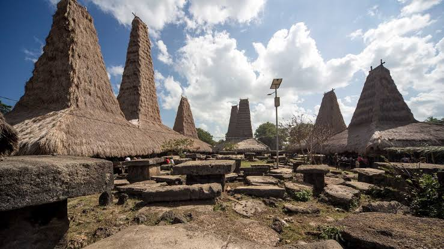
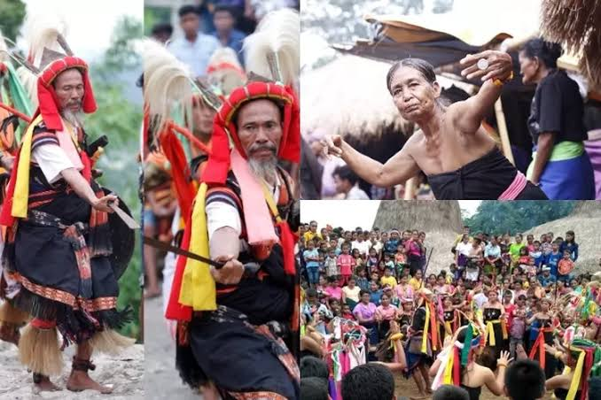

SEJARAH PULAU SUMBA
Pulau Sumba, yang terletak di bagian timur Indonesia, memiliki sejarah yang kaya dan menarik. Nama "Sumba" diyakini berasal dari kata "Humba" atau "Humbang", yang berarti "tanah asal" dalam bahasa lokal. Pulau ini telah dihuni sejak zaman prasejarah, dengan bukti arkeologis menunjukkan keberadaan manusia sejak ribuan tahun yang lalu. Sumba dikenal karena budaya maritimnya yang kuat dan hubungannya dengan perdagangan rempah-rempah di Nusantara.

Adat dan tradisi di Pulau Sumba sangatlah unik dan masih dijaga hingga saat ini. Salah satu tradisi yang paling terkenal adalah Pasola, sebuah ritual perang yang dilakukan dengan menunggang kuda dan melempar lembing kayu. Pasola tidak hanya sekadar pertunjukan, tetapi juga memiliki makna spiritual yang dalam, yaitu sebagai bentuk penghormatan kepada leluhur dan permohonan berkah untuk hasil panen yang melimpah. Selain Pasola, masyarakat Sumba juga dikenal dengan rumah adatnya yang disebut "Uma Mbatangu", yang memiliki atap tinggi dan dihiasi dengan ornamen khas.
Kehidupan masyarakat Sumba juga sangat dipengaruhi oleh kepercayaan Marapu, sebuah sistem kepercayaan animisme yang menghormati roh leluhur. Upacara-upacara adat seringkali dilakukan untuk memperingati peristiwa penting dalam kehidupan, seperti kelahiran, pernikahan, dan kematian. Semua tradisi ini menjadikan Sumba sebagai salah satu pulau yang kaya akan warisan budaya di Indonesia.